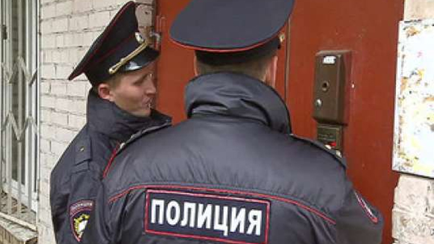
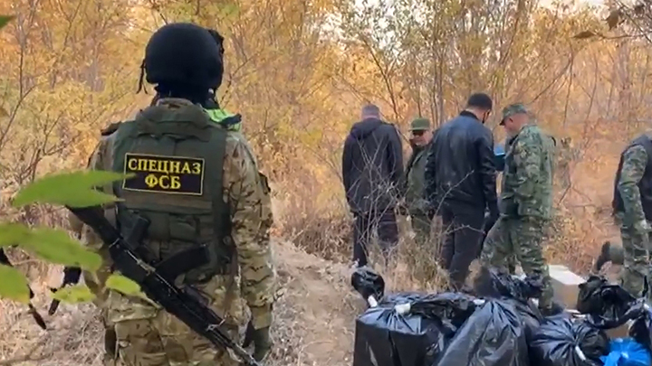

Понятие объективной стороны преступления
ЦИТАТА
Объективная сторона преступления — это внешняя сторона, внешнее проявление преступного посягательства.
Она имеет большое значение в теории уголовного права:
- объективная сторона как элемент состава преступления является одним из обязательных признаков преступления;
- она определяет объективные границы уголовной ответственности: виновный отвечает только за совершенное деяние и причиненный вред, ни за мысли и ни за убеждения;
- она является важнейшей предпосылкой правильной квалификации преступления. Так, анализ способа совершения преступления (например, количество и характер наесения ран при убийстве) позволяет установить форму вины обвиняемого и, следовательно, правильно квалифицировать его деяние;
- она позволяет правильно разграничивать схожие составы преступлений (например, причинение тяжкого вреда здоровью — ст. 111 УК, и причинение вреда здоровью средней тяжести — ст. 112 УК).
Признаки объективной стороны преступления
Объективная сторона включает обязательные признаки (общественно опасное деяние, общественно опасные последствия, причинная связь между деянием и преступными последствиями) и факультативные признаки (способ совершения деяния, орудия или средства его совершения, место, время, обстановка).
1) Общественно опасное деяние — общественно опасное, противоправное, осознанное и волевое поведение человека (совершение лицом противоправного деяния под принуждением или при обстоятельствах непреодолимой силы сужает пределы его ответственности).
Общественно опасное деяние возможно в двух формах (ч. 1 ст. 14 УК):
а) действие — активная форма преступного поведения, содержание которого может быть различным — от простого телодвижения (например, удар ножом при убийстве) до сложной системы (например, все составы, связанные с незаконным банкротством, и др.);
б) бездействие — пассивное поведение лица в ситуации, когда оно должно было действовать активно, например, врач не оказывает помощь больному (ст. 124 УК), лицо уклоняется от содержания детей, родителей (ст. 157 УК). Для признания бездействия преступным необходимо, чтобы лицо было обязано совершить соответствующие действия, но не совершило их, а также чтобы лицо имело реальную возможность совершить эти действия (так, ст. 125 УК устанавливает ответственность за оставление в опасности при условии, если виновный имел возможность оказать помощь).
Определенные преступления могут быть совершены только активными действиями (хулиганство — ст. 213 УК) или только бездействием (оставление в опасности — ст. 125 УК); действием или бездействием (убийство — ст. 105 УК), другие совершаются как путем действия, так и путем бездействия (например, убийство – ст. 105 УК РФ, причинение смерти по неосторожности – ст. 109 УК РФ, нарушение правил обращения экологически опасных веществ и отходов – ст. 247 УК РФ и т.д.).
2) Преступные последствия – предусмотренный уголовно-правовой нормой материальный или нематериальный вред, причиненный преступным деянием объекту посягательства. Уголовный закон может включать преступные последствия в состав преступления (материальный состав), а может вывести за рамки состава (формальный состав). Но в любом случае они должны быть установлены, доказаны и учтены при оценке совершенного преступления.
Преступные последствия делятся на два вида:
а) материальные – имущественные, физические (вред здоровью) последствия, нарушение нормальной работы учреждений, связи, транспорта и т.п.;
б) нематериальные – моральный ущерб (при оскорблении — ст. 130 УК), идеологический ущерб (при возбуждении национальной, расовой или религиозной вражды — ст. 282 УК); интеллектуальный ущерб (при нарушении авторских и смежных прав — ст. 146 УК).
3) Причинная связь — связь между общественно опасным деянием и наступившими преступными последствиями. В материальных составах причинная связь выполняет роль обязательного признака, в формальных ее установление не требуется. Установление причинной связи возможно по следующим схемам:
а) обстоятельство–причина предшествует во времени обстоятельству–следствию (смерть наступает после нанесенных виновным ранений потерпевшему);
б) обстоятельство–следствие наступает в результате закономерного развития обстоятельства–причины, а не действия иных причин (смерть наступила в результате нанесения побоев, которые сами по себе не были смертельными, но ввиду неоказания помощи потерпевшему наступила его смерть).
Возможна также случайная причинная связь, когда в ее развитие включаются другие обстоятельства, которые могут видоизменить преступный результат. Такими обстоятельствами могут быть действия потерпевшего, животных, насекомых, стихийных сил природы и т.п., которые могут привести к неожиданным последствиям. Например, после нанесения побоев потерпевшему в рану попала инфекция, от которой он в итоге скончался. Лицо, нанесшее побои, в данном случае не несет ответственности за убийство ввиду случайной причинной связи между его действиями и последствиями.
4) Способ совершения преступления – совокупность приемов и методов, используемых преступником. В конкретных составах преступления может быть указан единственный способ (тайное изъятие при краже, открытый — при грабеже), дан полный перечень возможных способов (угроза применения насилия, уничтожения имущества, шантаж — при вымогательстве) или назван примерный перечень способов (уничтожение чужого имущества путем поджога, взрыва или иным общественно опасным способом — ч. 2 ст. 167 УК). Законодатель в конкретных случаях, когда способ повышает общественную опасность деяния, вводит его в число признаков соответствующего состава преступления. Например, если оскорбление распространяется в публичном выступлении, публично демонстрируемом произведении или средствах массовой информации, то виновное за такое оскорбление лицо несет более строгое наказание (ч. 2 ст. 130 УК РФ).
5) Средства совершения преступления – это предметы, приспособления, которые виновный использует при посягательстве на объект преступления. Характер используемых средств изменяет степень общественной опасности совершаемого преступления. Поэтому законодатель включает их в число квалифицирующих признаков. Например, разбой с применением оружия или предметов, используемых в качестве оружия (п. «г» ч. 2 ст. 162 УК). В отдельных статьях УК РФ законодатель непосредственно указывает средства, с помощью которых совершается преступление. Например, незаконная добыча водных животных и растений с применением самоходного транспортного плавающего средства (п. «б» ч. 1 ст. 156 УК РФ), незаконная охота с применением механического транспортного средства или воздушного судна (п. «б» ч. 1 ст. 258 УК РФ).
6) Место совершения преступления – это территория, объекты, на которых совершается общественно опасное деяние. Чаще всего уголовное законодательство связывает место совершения преступления с географическим понятием: континентальный шельф, открытое море, открытое воздушное пространство. Оно может быть связано с создавшейся экстремальной или какой-либо особой ситуацией (зона экологического бедствия, исключительная экономическая зона Российской Федерации; запретная зона; места нереста рыбы; объекты атомной энергетики).
7) Время совершения преступления – длительность совершения события, либо определенный промежуток времени, в течение которого происходило это событие. Его установление может быть затруднительно (например, в случае длящихся преступлений), указание на время как признак объективной стороны преступления также встречается в УК РФ нечасто. Это, прежде всего, преступления, которые могут быть совершены в определенное время, например, мародерство – хищение имущества в условиях военных действий. Время может влиять на квалификацию деяния: так, наказуемы самовольное оставление части или места службы, а равно неявка в срок без уважительных причин на службу продолжительностью свыше десяти суток, но не более одного месяца, совершенные военнослужащим, проходящим военную службу по призыву или по контракту (ч. 3 ст. 337 УК РФ).
8) Обстановка совершения преступления – это внешние обстоятельства, окружение, сопутствующие совершению деяния: обстановка вооруженного конфликта, военных действий (ч. 1 ст. 359 УК); обстановка погибающего военного корабля (ст. 345 УК). Например, кража, совершенная в условиях чрезвычайного положения, стихийного или иного общественного бедствия, а также при массовых беспорядках, влечет для виновного более строгое наказание, чем кража, совершенная в обычных условиях (см. п. «л» ч. 1 ст. 63 УК РФ). К обстановке может относиться аффект – состояние сильного душевного волнения: например, убийство, совершенное в состоянии внезапно возникшего сильного душевного волнения, вызванного особой обстановкой (насилием, издевательством или тяжким оскорблением со стороны потерпевшего либо иными противоправными или аморальными действиями (бездействием) потерпевшего, а равно длительной психотравмирующей ситуацией, возникающей в связи с систематическим противоправным или аморальным поведением потерпевшего – ч. 1 ст. 107 УК РФ).